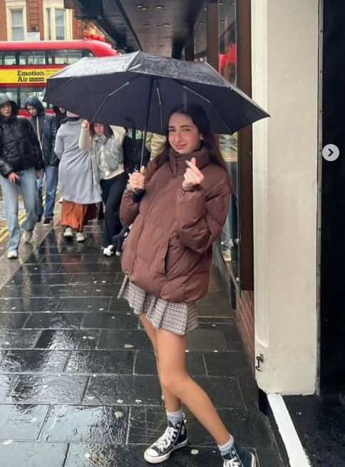
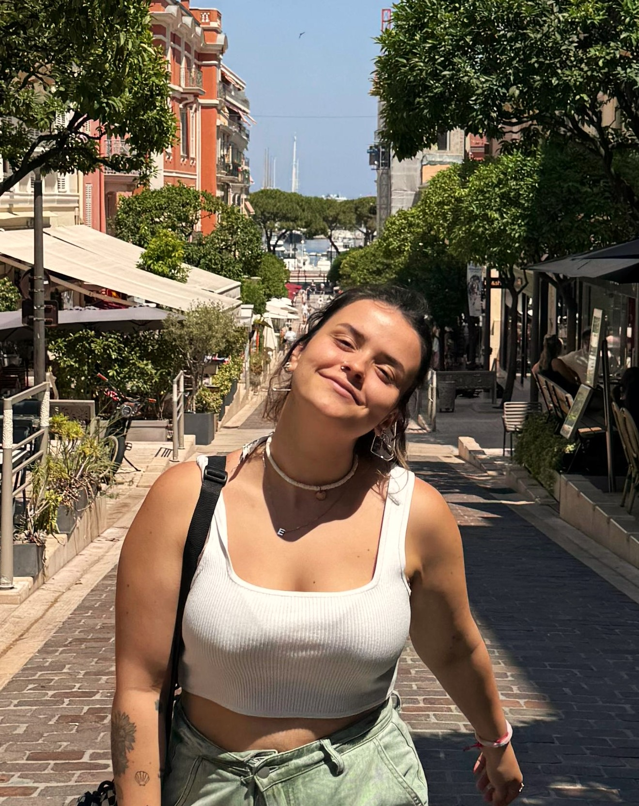

Daniela Borrego & Sara Escribano
Daniela Borrego

Hello! Soy Daniela, fan de la literatura de romance y terror, la música y el cine.
Graduada en Lenguas Modernas y sus Literaturas en la Universidad Complutense de Madrid, estudios enfocados en la lengua francesa e inglesa y en sus respectivos ámbitos literarios y lingüísticos.
Actualmente me encuentro estudiando un máster en Letras Digitales en la Universidad Complutense de Madrid, en el que me especializo en la rama del e-Learning. Además, hago prácticas en Asteria, Asociación Internacional de Mitocrítica, en el que estoy desarrollando un proyecto de desarrollo y programación de un mapa interactivo.
Anteriormente, he trabajado como agente de call center en la empresa Nexia Solutions S.L., en el que he gestionado llamadas telefónicas a la vez que me he formado en el ámbito de la atención al cliente y a la gestión de reservas de cadenas hoteleras.
Sara Escribano

¡Hola! Soy Sara, apasionada por la escritura, la literatura y el arte audiovisual.
Mi trayectoria comenzó estudiando Lenguas Modernas, Cultura y Comunicación en la Universidad Autónoma de Madrid, donde me enfoqué en asesoría lingüística, escritura creativa y comunicación audiovisual.
Actualmente trabajo en una librería y hago prácticas en Lovi AI mientras estudio un master en Letras Digitales en la Universidad Complutense de Madrid, en el cual profundizamos en diferentes ramas de las Humanidades Digitales.
También he realizado un voluntariado como copywriter en Socialty y un curso especializado en Maquillaje Social y Caracterización.